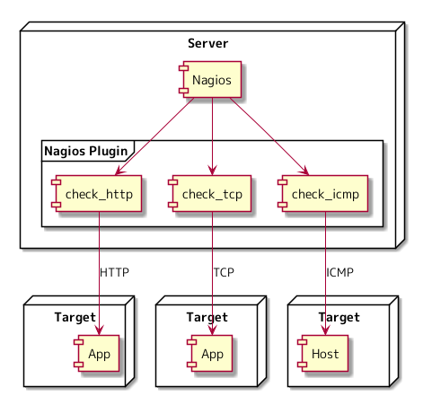
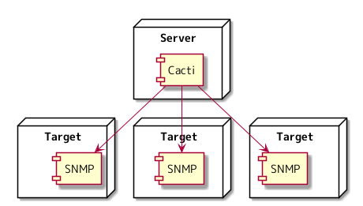
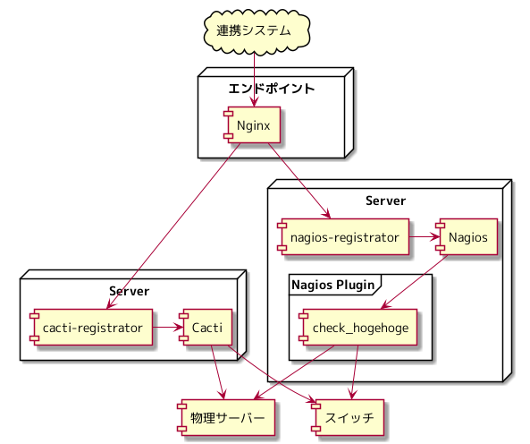

さくらインターネット Advent Calendar 2021 9日目の記事になります。
Prometheus を知っているでしょうか。 近年、モニタリングを賑わせているソフトウェアになります。
Prometheus についての内容、 Prometheus の設定方法、どのような Exporter があり、 どのように使うのかという記事は、インターネット上でたくさん目にしましたが、 従来のモニタリングの仕組みと比べ、 Prometheus がどのような点で異なっており、 その異なる部分がモニタリングにどのように生きてくるのかということを書いた記事は見掛けたことはありません。
自分なりに Prometheus 以前のモニタリングの仕組みはどうであるかを考察し、 Prometheus がイケてるという理由で使われているのではなく、 従来のモニタリングの仕組みと比べて、 Prometheus を使うと何がうれしいのかということを書いていけたらと思っています。
今回は、 Prometheus 以前のモニタリングの仕組みはどうであるか考察し、「さくらの専用サーバ PHY」に適用するとどうなりそうかについて考えてみます。
従来のモニタリングの仕組み
モニタリングには、システムの異常に気が付き対応できるようにするための死活監視、 アラートが上がったときなどにシステムのリソースなどを時系列で確認するためのシステムが存在しているはずです。
下記の観点から従来のモニタリングの仕組みがどうであるかについて考察してみます。
- 対象の追加・削除
- ストレージ
- インタフェース
- スケールアウト
Nagios , Cacti を従来のモニタリングの仕組みとして考察します。
Nagios でのモニタリング

Cacti でのモニタリング

対象の追加・削除
モニタリングしたい対象のサーバーが1台あったと仮定して、 モニタリングのため、死活監視を Nagios に登録し、グラフを Cacti に登録するなど、 それぞれのシステムごとにモニタリングの対象を登録していかなければなりません。
Nagios, Cacti ともに IPAM などと連携し対象を登録していくという仕組みはなく、 対象の追加・削除は手動で行うことになります。 「対象の追加・削除を自動化したい」となったときには、そのための仕組みを開発する必要がありそうです。
ストレージ
死活監視のデータは Nagios に保存され、 グラフのためのデータは Cacti に保存されるため、 システムごとにストレージが異っています。
HTTP API を介してストレージのデータにアクセスするという手段は無く、 それぞれが決めた形式にてデータを持っているため、 結果として保存されているデータは、そのシステムでしか使えないという状況となっています。
インタフェース
Nagios では、なんらかのチェックを実行し、結果を Nagios に返すプログラムは、 Nagios プラグインと呼ばれています。 図にある check_http は、対象の HTTP に関連するチェックを実行し、その結果を Nagios に返し、 check_icmp は、対象に ICMP を送り、その結果を Nagios に返します。
Nagios は、 リターンコード によって Warning, Critical を発砲する仕組みとなっています。 リターンコード に沿っていれば、自作の監視コマンドを Nagios に組み込むことが可能になっています。 リターンコード により、 Nagios と Nagios プラグインの連携がネットワークを超えられないという制約を受ける形となっています。 ( NRPE を使えば、ネットワークを越えられますが、今回は Nagios 単体で見たときにということにしています。 )
Cacti も Nagios のそれそれが持つインタフェースが異なるため、 何かの値をもとにアラートを発砲したい要件があったとすると、 Nagios の場合は、 Nagios のインタフェース、 Cacti の場合は Cacti のインタフェースで実装することになります。
スケールアウト
リターンコード により、 Nagios と Nagios プラグインの連携がネットワークを超えられないため、 Nagios の性能限界に達したときには、 Nagios と Nagios プラグインがセットになったサーバーを1台追加するという形をとることになります。
Nagios の数だけ、 Nagios プラグインをセットアップする必要があるため、 管理する Nagios の数が多いほど Nagios や Nagios プラグインを管理するコストは増えていきます。
さくらの専用サーバ PHY での利用を考えてみる
従来のモニタリングの仕組みとして Nagios, Cacti を取り上げ、考察してみました。 これらをふまえて、「さくらの専用サーバ PHY」にて、 Nagios, Cacti を使った場合のモニタリングがどうなりそうか考えてみます。
ユーザーが利用している機器のモニタリング
ユーザーに物理サーバーを提供しているサービスで、 物理サーバーの異常をモニタリングする必要があります。 物理サーバーは数百台、数千台と利用者の増加に合わせて増えていきます。 物理サーバーに接続するスイッチも、サーバーの台数によって増加していきます。
Nagios, Cacti に、いつ、誰が物理サーバー、スイッチのモニタリングを追加するか考えてみます。
手動でやるとどうなるでしょうか。 営業日にモニタリングの設定をしましょうか、 一日に何件やることになりでしょうか、 それだけやって営業時間が終わる日がありますかね。 人間がオペレーションの一部に組み込まれるのは辛そうです。 エンジニアリングで解決してみたいと思います。
エンドポイントを公開し、システム連携できるようにしてみます。 Nagios , Cacti に HTTP API は無いので、登録するためのアプリケーションを作り、 そのアプリケーションがリクエストを受け、 Nagios , Cacti に対象を登録するという構成になりそうです。

利用を開始するユーザーもいれば、終了するユーザーもいるはずです。 アプリケーションには、登録だけではなく、削除する機能も必要そうです。 物理サーバーのメモリが故障したときなどには、物理サーバーを停止し、交換する作業が発生します。
Nagios でモニタリングしたままでは、アラートが発砲されるため、メンテナンスを制御するための機能も、 アプリケーションに必要そうです。
サービス提供のために動いているアプリケーションのモニタリング
モニタリングする対象は、ユーザーに提供している機器だけではありません。 サービスを提供するために動かしているアプリケーションもモニタリングの対象です。
コンテナオーケストレーションを利用している場合のモニタリングはどうなるでしょうか。 コンテナオーケストレーションを使うモチベーションを自分なりに考えてみた に出てきた Nomad を使いアプリケーション実行環境を構成している場合は、 モニタリングの対象が、次の瞬間には別のサーバーで実行されている可能性があります。
コンテナオーケストレーションにて必要になってくるもの に出てきた Consul からモニタリングの対象を特定し、 Nagios, Cacti を更新するというアプリケーションを作って、モニタリングの対象を更新していくという手はありそうです。
ユーザーへのトラフィックグラフの提供
「さくらの専用サーバ PHY」では、 物理サーバーのインタフェースからどのくらい通信をしているのか、 ユーザーが、コントロールパネルからグラフで確認できるようにするという要件がありました。
Cacti は MySQL に取得したデータを保存しています。 Cacti にトラフィックの値が格納されていると仮定して、 MySQL に保存されているデータを返す Web API サーバーを作るとトラフィックグラフをユーザーに提供できそうです。

Nagios, Cacti で「さくらの専用サーバ PHY」をモニタリングしようとすると結構いろいろアプリケーションを作らなければならないなということが見えてきました。
これらをふまえて、次回は、従来のモニタリングの仕組みと比べて、 Prometheus を使うと何がうれしいのかということを考えてみます。